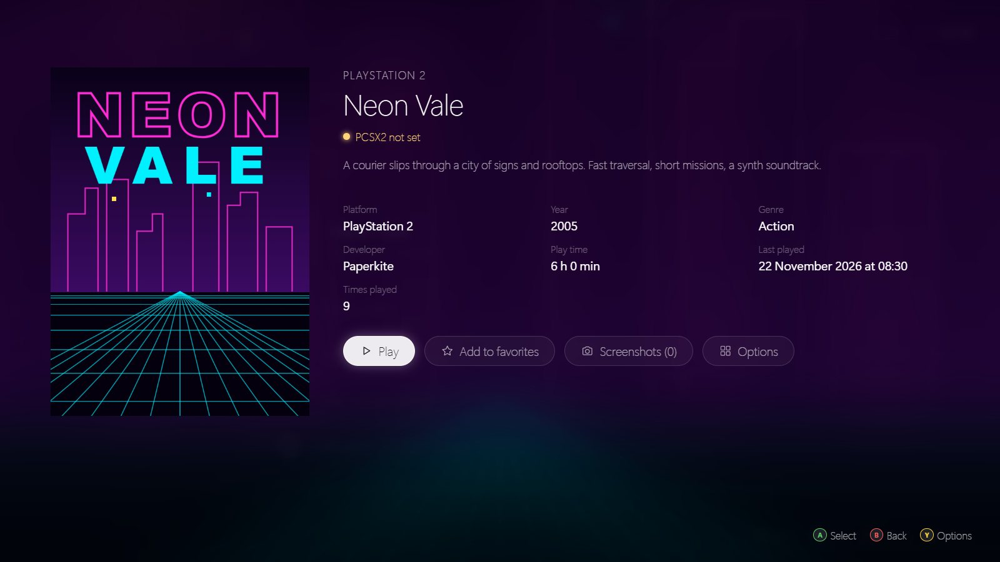

Library
How games are found, organised and launched.

Categories
The top row holds the categories: Home, PlayStation, Xbox, Nintendo, Sega, Other Platforms, PC Games, Apps, Media, Store and Settings. Console categories contain one folder per platform; categories without games stay hidden.
Store games
Games from Steam, Epic, the Xbox app, GOG, EA, Ubisoft Connect, Battle.net and Riot start through their own launchers. POLYMIRA then finds the game's process from its install folder, so play time, the in-game menu and game mode work for them too.
Adding games yourself
- Home → Add games → Add game folder scans a folder for one platform, or detects the platform from file types and folder names.
- Add a single game adds one file. For PC games you can pick an
.exe, a shortcut (.lnk) or an internet shortcut (.url). - Multi-disc games are grouped through
.cue/.binand.m3ufiles. PS3, PS4 and Vita game folders are read from theirPARAM.SFO.
Added folders are watched: Settings → Library & Storage → Rescan all folders picks up new games, and scanning on start can be turned on there.
Artwork and information
Covers and backgrounds come from the game files themselves (PS3/PS4/Vita), Steam, the Epic launcher's cache and the libretro thumbnail archive. Descriptions, year, genre and developer come from the Steam store, the libretro database and Wikipedia. You can set your own cover, background and theme music from a game's options.
Search and random pick
Home → Search games opens the on-screen keyboard; results match the title, platform, genre or developer and open as a cover gallery. Home → Pick a game for me opens a random game, preferring ones you have never played.
Gallery view
Press X / □ on a platform folder to see its games as a grid of covers.

Compatibility labels
Each platform is marked Stable, Experimental or Unsupported, and each game shows the result of its last launch. A platform with no working emulator is never shown as playable.